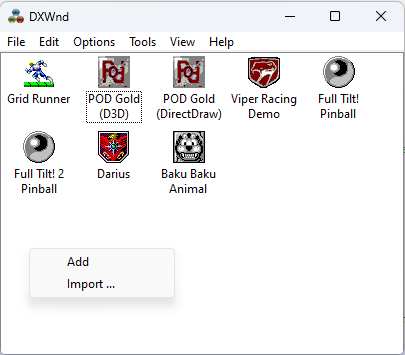
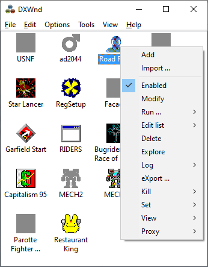
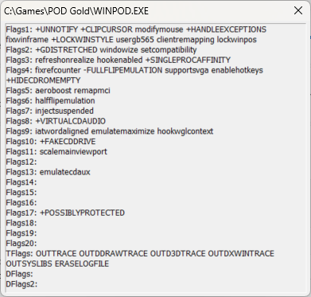

When right-clicking on the DxWnd panel in an empty area, a pop-up menu with few generic commands is shown.

Instead, when right-clicking on a program's entry a richer pop-up menu is visible with additional commands related to the selected entry (Some of the options are only visible in Expert mode).
The menu choices are divided into two groups. At the top, there are commands that are always available and allow you to add a new configuration entry ("Add" and "Import ...") while at the bottom, there are commands that work on a specific and selected program's entry.
Note: Depending on the visualization options (as set using View > List), the program entry can either be a line in a listbox or an icon.
|
Add |
Prompts for all data needed to define a new task in the list. |
|
Import ... |
Opens a file selection dialog to let you select a .dxw import file with a program configuration and import that into the list of programs. |
|
Enabled |
Toggle command to enable or disable the selected program's entry. If the program's hook is enabled, the menu command is checked but unchecked when disabled. In addition, disabled programs have a grayed icon or a dark-gray dot. |
|
Modify |
Allows you to view and modify the program's configuration. |
|
Run... |
Run hooked - Activates (runs) the selected task. Same as double-clicking on the list entry. Run unhooked - Runs the selected task without activating any form of DxWnd injection. Run suspended - For debugging purposes and for injection modes that support this feature (the "Inject DLL" and "Inject APC" modes only), runs and suspends the injected task so that the user can safely activate a debugger and attach it to the process. Once the attach operation is completed, the user should run the attached program and only after that, he should click on the OK button on the DxWnd dialog box to unfreeze the task. NOTE: While frozen, the task stays within an endless closed loop that will consume 100% of the current CPU core, so the processor may get hot. NOTE: It is suggested to set a breakpoint for the "dxwnd.dll" module load event in order to let the debugger control the task when the hooks are activated. |
|
Delete |
Asks for confirmation and then deletes the selected entry. |
|
Edit list > Duplicate |
Duplicates or clones an entry. You can modify the clone without affecting the original. This allows you to create multiple different entries with consistent settings. |
|
Edit list > Move |
This menu is equivalent to Edit > Move. Moves the selected entry in the list. |
|
Edit list > Copy path |
Copies the selected program's target pathname to the clipboard, with no need to edit the entry with the "Modify" command. |
|
Edit list > Paste path |
Pastes the selected program's target pathname from the clipboard. In conjunction with the "Copy path" command, it allows to quickly replicate a task pathname with no need to edit the entries with the "Modify" command. |
|
Explore |
Opens a File Explorer session, pointing to the program's configured install path. |
|
Log |
This menu is equivalent to Edit > Log with a few additions for expert users. Run DebugView: Runs the DebugView tool, provided that this tool is installed and present in DxWnd's directory. If the tool is either absent or not in DxWnd's directory, an error message will appear. view Tail: Runs the tail tool on the target program's logfile, provided that this tool is reached in DxWnd's directory. This tool is a part of DxWnd's tools distribution, you may copy it either to the DxWnd folder or to $WinDir/System32. Run "tail.exe" from a command prompt to get the command syntax: the tool can be used standalone for any generic purpose. |
|
eXport... |
Exports the highlighted program configuration to a file. |
|
Kill > Hooked task |
Kills one instance of the program whose pathname matches the selected entry. Differently from the Tools > Process > Kill command, this command would not kill the currently active program, but the selected one, no matter whether it was managed by DxWnd or not. |
|
Kill > All tasks |
Same as Kill > Hooked task, but it would kill every instance of the selected program. This could be necessary when there are multiple instances of the same program that are active at the same time. |
|
Set registry |
Saves the registy entries from DxWnd's "Registry tab" into a file called "dxwnd.reg". |
|
Set path |
Can be used to update the path field for a configuration. You must have the game running for it to work. |
|
View Flags |
Opens a window showing all the DxWnd flags enabled for the application. To make it easier to spot significant changes with the default configuration, all the default flags are written in lowercase characters, the additional flags are written in uppercase with a plus ('+') prefix and the deleted flags are written in uppercase with a minus ('-') prefix. Debug and log flags are not prefixed since they are always cleared in a default configuration.  |
|
View import table |
Opens a window showing the import table of the target program. It could be useful for experienced users to see the DLL modules that are linked, and the used calls. |
|
Proxy |
Used to set up the program to run from a proxy DLL. This way, the DxWnd interface does not need to be started. See Proxy/portable setup. NOTE: Do not try to run a game with DxWnd if it has proxy DLLs installed (it usually results in a crash). NOTE: If you edit the configuration of your game, then you will need to remove and install the proxy again for the changes to take effect. |